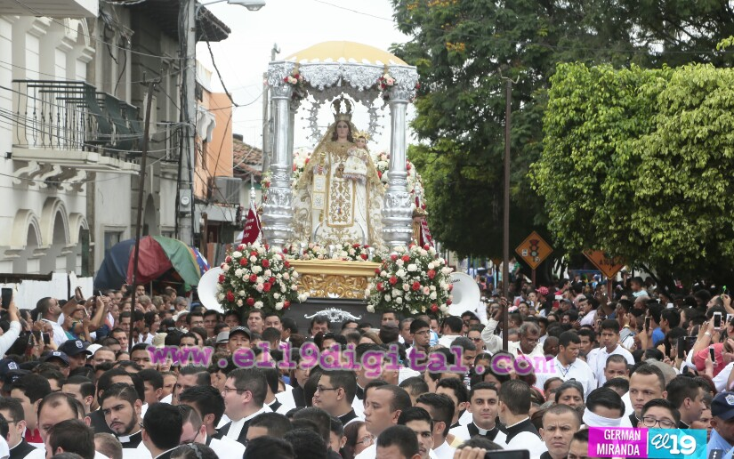
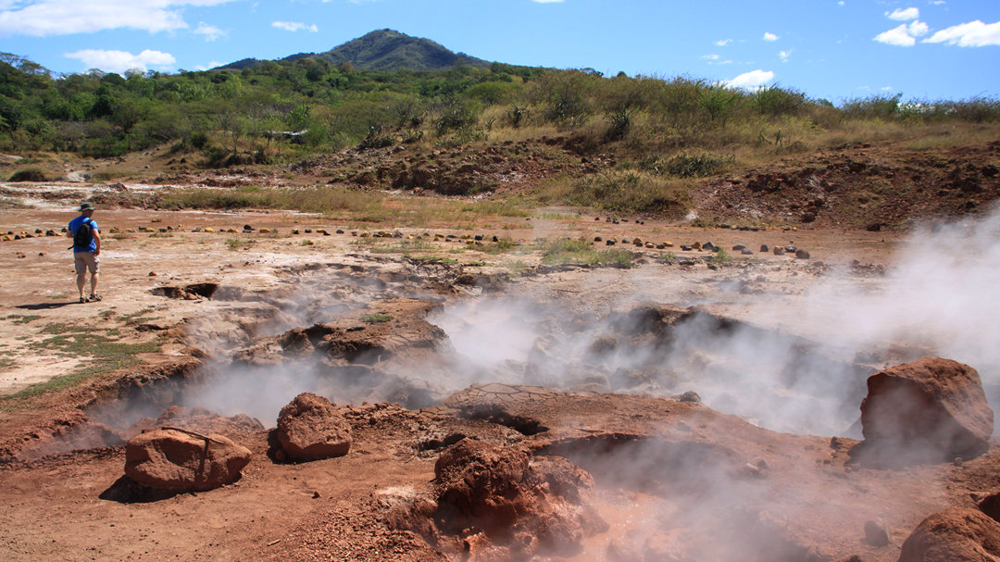

¿Qué es León?
León es una ciudad histórica ubicada en el occidente de Nicaragua, conocida por su arquitectura colonial, su vibrante vida cultural y su papel importante en la historia del país.
Lugares de interés
- Catedral de León
- Ruinas de León Viejo
- Volcán Cerro Negro
- Plaza Central de León
La Virgen de La Merced - Patrona de León
Fue hasta el 17 de julio de 1912 que el obispo Simeón Pereira y Castellón declaró “*PATRONA de la Ciudad de León” con el vivo deseo de que de esta manera se acreciera más su devoción. Este decreto fue emitido en esa fecha y citado por **Nicolás Buitrago Matus en su obra León, la sombra de Pedrarias* (Tomo I, Managua, Fundación Ortiz Gurdián, junio de 1998, pp. 127-128).
Además, en el atrio de la iglesia de La Merced, el obispo Bosco Vivas colocó una gran placa conmemorativa** del centenario de la declaración del patronazgo de la Virgen de La Merced el 17 de julio de 2012. Esta placa es una elocuente prueba de la importancia de este evento en la historia de la ciudad.
A inicios del citado año de 1912, se desató la guerra civil conocida como la guerra de Mena. Durante este conflicto, los liberales menistas de León, que luchaban contra los conservadores, recibieron un apoyo muy peculiar: según una leyenda forjada en esa época, una Señora (a quien llamaron Chela) les repartía municiones que les faltaban para seguir combatiendo. Se dice que la Virgen de La Merced fue vista como una figura protectora que ayudaba a los liberales en su lucha.
El patronazgo de la Virgen de La Merced o de Las Mercedes, originaria de Barcelona hace ocho siglos, no tiene sus raíces en el siglo XVI ni en León Viejo, sino que es una tradición bastante reciente, de la segunda mitad del siglo XX. En 1918, cuando se celebraba el séptimo centenario de la aparición de la Virgen en Barcelona, el capellán de la iglesia de **La Merced** en León, Félix Pereira y Castellón, mandó colocar en la parte externa del templo diez u once placas de mármol alusivas a este magno acontecimiento. Estas placas fueron dedicadas por diversas autoridades civiles, militares y eclesiásticas.
El culto a la Virgen de La Merced fue enaltecido por el poeta y músico **Tino López Guerra** (1906-1967) a través de su célebre corrido, estrenado en febrero de 1949. En este corrido, él cantó:
*"De Mercedes la Virgen Bendita / es la gran patroncita de León / que nos dio a la mujer más bonita / para que fuera un adorno en mi región."*
Catedral de León: Mitos y Realidades
La Catedral de León es uno de los edificios más emblemáticos de Nicaragua, con una rica historia y algunos mitos interesantes que la rodean. Uno de los mitos más conocidos es el de una serpiente gigante que supuestamente vive bajo la catedral. Sin embargo, este mito se originó debido a los antiguos senderos subterráneos que atraviesan la zona, usados en el pasado para escapar de los piratas que atacaban la ciudad.
En realidad, la Catedral de León está construida con una mezcla especial de materiales, como clara de huevo, cal y harina, que le da su característica pintura blanca que la hace tan visible desde lejos.
En su interior, se encuentran varios personajes históricos, entre ellos el poeta nicaragüense Rubén Darío, quien está vinculado con la catedral y la ciudad de León. Además, la catedral alberga un sótano con reliquias de santos, siendo la más reciente la del Beato Carlo Acutis. Cada miércoles por la tarde, se celebran misas en este lugar, en honor a estas reliquias.
Dentro de la catedral se encuentran varias imágenes religiosas de gran importancia para la comunidad católica, como:
- La Virgen de Cuapa
- San Juan Pablo II
- La Virgen de la Concepción
- San Jerónimo
Hervideros de San Jacinto
Los Hervideros de San Jacinto son una impresionante área geotérmica ubicada a unos 30 minutos al norte de León. Este lugar es conocido por sus burbujeas de agua caliente que emergen de los suelos volcánicos, debido a la actividad geotérmica de la zona.
En los Hervideros, se pueden ver pequeñas fuentes de agua caliente, que emiten vapor y burbujeas, dando la sensación de que "hierve". Este fenómeno natural es fascinante para los visitantes, ya que es una muestra clara de la actividad volcánica que caracteriza a la región.
El lugar se encuentra en un entorno natural, rodeado de vegetación tropical y de fácil acceso. Además, es una excelente opción para aquellos interesados en el ecoturismo y las maravillas geotérmicas de Nicaragua.
Cómo llegar a los Hervideros de San Jacinto
Para llegar a los Hervideros, puedes tomar un transporte desde León hacia el municipio de La Paz Centro. Desde ahí, se sigue un camino rural que te llevará directamente a la zona de los hervideros. Es recomendable ir con un guía local para aprovechar al máximo la experiencia.
Puntos importantes sobre los Hervideros de San Jacinto
- 🌋 **Atractivo natural geotérmico**: Los Hervideros son un fenómeno geotérmico donde el agua burbujea debido a la actividad volcánica.
- 💧 **Burbujas de agua caliente**: Se pueden ver burbujas que emergen del suelo, dando la sensación de que el agua hierve.
- 🌿 **Ideal para ecoturismo**: Es un destino perfecto para los amantes de la naturaleza y el ecoturismo.
- 🚗 **Fácil acceso**: Está ubicado a tan solo 30 minutos de León, lo que lo hace de fácil acceso para turistas locales e internacionales.
Clima de León
León goza de un clima cálido y único. Las temperaturas suelen ser altas durante todo el año, con un promedio de 30°C (86°F). La temporada de lluvias ocurre entre mayo y octubre, pero incluso durante esta época, las temperaturas son agradables debido a las brisas constantes.
Este clima cálido y tropical es ideal para disfrutar de sus paisajes naturales, su arquitectura colonial y las actividades al aire libre. León es un destino perfecto si buscas disfrutar de un clima constante y cálido durante todo el año.